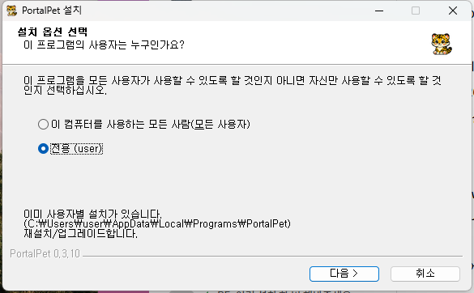
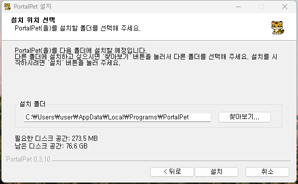
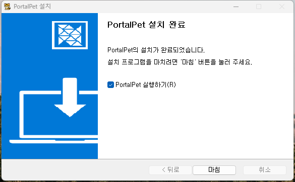
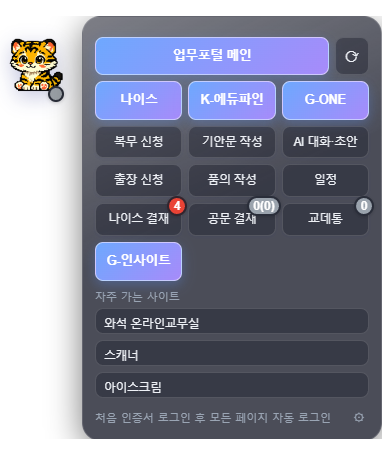
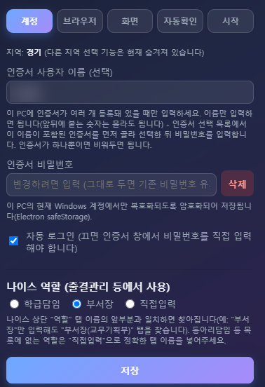
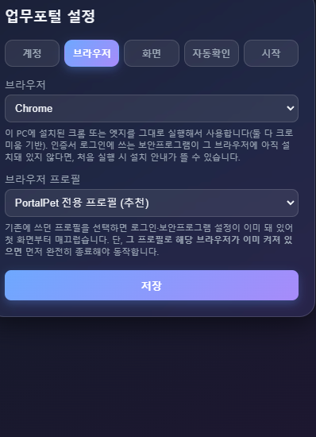
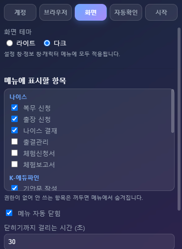
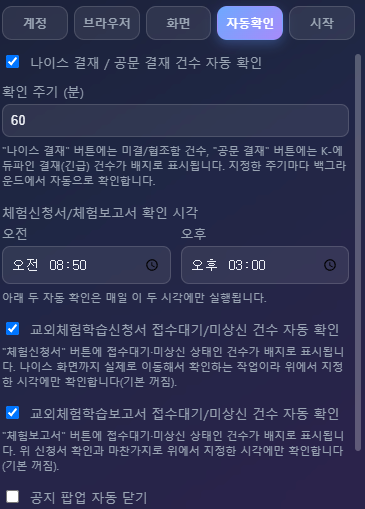
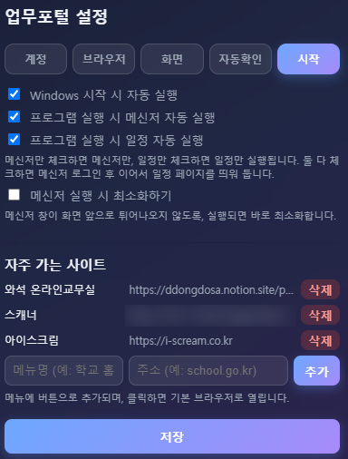

캐릭터 클릭 한 번으로 나이스 · K-에듀파인 · G-ONE까지, 업무포털 원클릭 접속
PortalPet은 바탕화면에 떠 있는 호랑이 캐릭터로 업무 시스템에 바로 들어가게 해 주는 무료 Windows 프로그램이에요.
릴리즈 페이지에서 최신 설치 파일 PortalPet-Setup-x.x.x.exe를 내려받아요.



처음 실행하면(또는 저장된 비밀번호가 없으면) 설정 창이 자동으로 열려요. 아래 두 가지만 입력하고 저장을 누르면 끝이에요.
브라우저, 자주 가는 사이트 같은 나머지 항목은 나중에 언제든 바꿀 수 있어요.
설치 파일을 다시 내려받을 필요 없이 프로그램 안에서 바로 업데이트할 수 있어요.
프로그램을 켤 때마다 새 버전이 있는지 조용히 확인해요. 최신 버전이면 아무 알림 없이 넘어가고, 새 버전이 있을 때만 안내 창이 떠요. 직접 확인하려면 이렇게 하세요.
업데이트해도 지역, 비밀번호, 자주 가는 사이트 등 기존 설정은 그대로 남아 있어요.

| 버튼 | 하는 일 |
|---|---|
| 업무포털 메인 | 업무포털 홈으로 바로 이동해요. 옆의 새로고침(⟳) 버튼은 결재 현황을 그 자리에서 다시 확인해요. |
| 나이스 · 복무 신청 · 출장 신청 · 나이스 결재 · 출결관리 · 체험신청서 · 체험보고서 | 나이스 홈, 복무·출장 신청서 작성 화면, 결재 화면, 출결관리, 교외체험학습 신청서·보고서 관리 화면으로 이동해요. 출결관리는 설정에서 고른 “나이스 역할”에 맞는 화면으로 가요. |
| K-에듀파인 · 기안문 작성 · 품의 작성 · 공문 결재 | K-에듀파인 홈, 표준서식(기안문) 작성, 품의등록, 결재대기 화면으로 이동해요. |
| G-ONE · AI 대화·초안 · 일정 · 교데통 | 업무협업 G-ONE 홈, AI 대화·초안, 일정 화면으로 이동해요. 교데통은 교육데이터포털의 내부승인 처리 화면으로 가요. |
| 교직원홈 · e-다산 · G-인사이트 · 교원성장플랫폼 | 자주 쓰는 교육청 부속 시스템 홈으로 바로 가는 버튼이에요. |
버튼을 처음 누르면 인증서 로그인이 자동으로 진행돼요(비밀번호를 저장해 둔 경우). 이미 로그인돼 있으면 바로 그 화면으로 이동해요.
설정에서 추가한 사이트는 메뉴 아래쪽에 버튼으로 나타나요. 자동 로그인 대상은 아니에요.
사이트마다 열 브라우저를 고를 수 있어요. 기본 브라우저 대신 평소 쓰던 크롬·엣지 프로필(예: 크롬 - 학교 계정)을 고르면 그 프로필의 로그인 상태 그대로 열려요. NEW
접수대기·미상신 상태인 건수를 체험신청서·체험보고서 버튼에 배지로 보여 줘요.트레이 아이콘을 오른쪽 클릭 → 설정을 누르면 언제든 바꿀 수 있어요. 설정은 다섯 개 탭으로 나뉘어 있어요.
| 인증서 사용자 이름 (선택) | 이 PC에 인증서가 여러 개 있을 때만 입력해요. 이름만 넣으면 그 이름이 들어간 인증서를 골라 로그인해요. 인증서가 하나면 비워 두세요. |
| 인증서 비밀번호 | 저장해 두면 매번 입력하지 않아도 자동 로그인돼요. 삭제로 저장된 비밀번호만 지울 수 있어요. |
| 자동 로그인 | 끄면 인증서 창이 뜰 때마다 비밀번호를 직접 입력해요. |
| 나이스 역할 | 출결관리 등에서 쓸 나이스 상단 역할 탭이에요(학급담임 / 부서장 / 직접입력). 앞부분만 맞아도 찾아요(예: “부서장” → “부서장(교무기획부)”). 목록에 없는 역할은 “직접입력”에 정확한 탭 이름을 넣어 주세요. |
| 브라우저 | 이 PC에 설치된 Chrome 또는 Edge 중에서 골라요. |
| 브라우저 프로필 | 항상 PortalPet 전용 프로필을 써요. 크롬·엣지 보안 정책상 평소 쓰던 프로필로는 자동 로그인과 메뉴 이동을 할 수 없어요. 전용 프로필도 로그인 상태와 보안프로그램 설정은 계속 유지돼요. |
| 화면 테마 | 라이트 / 다크. 설정 창·정보 창·캐릭터 메뉴에 모두 적용돼요. |
| 메뉴에 표시할 항목 | 메뉴 버튼을 하나씩 켜고 끌 수 있어요. 권한이 없어 안 쓰는 항목은 꺼 두면 메뉴에서 숨겨져요. |
| 메뉴 자동 닫힘 | 켜 두면 펼친 메뉴가 지정한 시간(초) 뒤에 자동으로 접혀요. |
| 메뉴 투명도 | 펼친 메뉴 배경의 투명도(20~100%)예요. |
| 캐릭터 이미지 | 배경이 투명한 이미지를 올리면 호랑이 대신 사용해요(평상시 / 드래그할 때 / 오래 안 쓸 때). 올리지 않은 상태는 기본 이미지를 써요. |
| 나이스 결재 / 공문 결재 건수 자동 확인 | 켜 두면 확인 주기(분)마다 결재·승인 대기 건수를 확인해 배지와 알림으로 보여 줘요. |
| 체험신청서/체험보고서 확인 시각 | 체험학습 신청서·보고서를 자동으로 확인할 하루 두 번의 시각이에요(기본 08:50, 15:00). |
| 교외체험학습 신청서 / 보고서 건수 자동 확인 | 켜 둔 항목만 위 시각과 새로고침(⟳) 때 확인해요(기본 꺼짐). |
| 공지 팝업 자동 닫기 | 나이스·K-에듀파인의 공지·안내 팝업을 자동으로 닫아 줘요(기본 켜짐). 첨부파일 다운로드가 안 되면 꺼서 확인해 보세요. |
| Windows 시작 시 자동 실행 | 컴퓨터를 켤 때 PortalPet도 같이 켜져요. |
| 프로그램 실행 시 메신저 / 일정 자동 실행 | 프로그램을 켤 때 G-ONE 메신저 로그인과 일정 화면을 자동으로 띄워요. 하나만 골라도 되고 둘 다 골라도 돼요. |
| 메신저 실행 시 최소화하기 | 메신저 창이 화면 앞으로 튀어나오지 않게 바로 최소화해요. |
| 자주 가는 사이트 | 메뉴명과 주소를 넣고 추가하면 메뉴 아래쪽에 버튼이 생겨요. 열 브라우저에서 기본 브라우저 또는 크롬·엣지의 특정 프로필을 고를 수 있고, 이미 추가한 사이트도 목록에서 바꿀 수 있어요. 고른 프로필이 없어지면 기본 브라우저로 열려요. |





작업표시줄 오른쪽 아래의 PortalPet 아이콘을 오른쪽 클릭하면 나오는 메뉴예요.
| 메뉴 | 하는 일 |
|---|---|
| 설정 | 설정 창을 열어요. |
| 펼치기/접기 | 캐릭터를 클릭한 것처럼 메뉴를 열고 닫아요. |
| Windows 시작 시 자동 실행 | 컴퓨터를 켤 때 PortalPet도 같이 켜지게 해요. |
| 로그 폴더 열기 | 문제가 생겼을 때 보낼 로그 파일이 있는 폴더를 열어요. |
| 프로그램 정보 | 현재 버전, 새 버전 확인, 문의 메일을 볼 수 있어요. |
| 종료 | PortalPet을 완전히 종료해요. |
코드 서명 인증서 없이 배포해서 나오는 정상적인 경고예요. 추가 정보 → 실행을 눌러 진행하세요.
네, 쓸 수 없어요. 크롬(136 버전부터)·엣지는 보안을 위해 평소 쓰는 프로필을 다른 프로그램이 조종하지 못하게 막아요. 예전 버전에서 평소 프로필을 골라 두었다면 업데이트할 때 자동으로 PortalPet 전용 프로필로 바뀌어요. 바뀐 뒤 처음 한 번은 인증서 로그인과 보안프로그램 설치 안내가 다시 뜰 수 있어요.
설정에서 “자동 로그인”이 켜져 있고 비밀번호가 맞는지 확인해 주세요. 처음 쓰는 브라우저로 처음 로그인할 때는 보안 프로그램 설치 안내가 뜰 수 있어요. 안내대로 설치하면 그다음부터는 정상적으로 진행돼요.
프로그램이 몇 초 동안 다시 시도하며 닫으니 잠시 기다려 주세요. 계속 남아 있다면 직접 닫은 뒤 메뉴 버튼을 한 번 더 눌러 주세요. 공문 결재는 팝업을 직접 닫으면 기다렸다가 결재대기 화면으로 이어서 이동해요.
“공지 팝업 자동 닫기”가 켜져 있으면 일부 화면(게시판 첨부파일 다운로드 창 등)을 공지 팝업으로 잘못 알고 닫을 수 있어요. 설정에서 이 옵션을 끈 뒤 다시 해 보세요.
버튼을 실행하다 문제가 생기면 메뉴 아래에 짧은 안내가 나와요. 대부분은 팝업을 닫거나 버튼을 한 번 더 누르면 해결돼요. 같은 문구가 계속 나오면 트레이 메뉴 → 로그 폴더 열기에서 portalpet.log 파일을 보내 주세요. 자세한 오류 내용은 이 로그 파일에만 기록돼요.
메신저 기능은 PC에 Brity 메신저 앱이 설치돼 있어야 동작해요.
설정 → 자동확인에서 해당 항목이 켜져 있는지, 설정의 “나이스 역할”이 학급담임인지 확인해 주세요. 정해진 시각(기본 08:50, 15:00)에만 자동으로 확인하니, 바로 보고 싶으면 새로고침(⟳) 버튼을 눌러 주세요.
오류가 있거나 바라는 기능이 있으면 메일로 알려 주세요. 오류라면 트레이 메뉴 → 로그 폴더 열기에서 portalpet.log 파일을 함께 보내 주시면 원인을 훨씬 빨리 찾을 수 있어요.